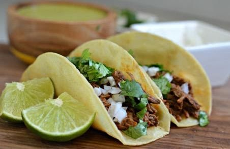

Receta de Tacos de Bistec

Ingredientes:
- 1 kg de carne de Bistec
- Aceite
- 1 Kg tortillas
- Cilantro
- Cebolla
- Salsa
- Frijoles
Instrucciones:
- Colocar el sarte en estufa y encender el quemador
- Esperar que tome una temperatura y colocar aceite
- Sazonar previamente la carne y ponerla en el sarten
- Cocinar durante 10 minutos o hasta ver que la carne esta lista
- Mientras se cocina la carne, picar cebolla y cilantro de manera finita
- Una vez cocinada la carne vertirla en un recipiente termico
- En el mismo sarten con grasa calentar las tortillas
- Preparar un plato con la tortilla y vertirle la carne
- Acompañar con el cilantro, cebolla, frijoles y Salsa
- Degustar de este rico taco